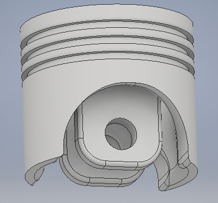
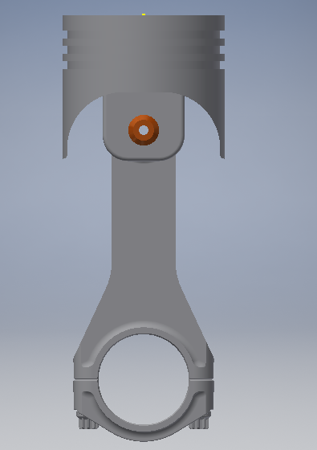

Images



One of my first hands-on CAD projects in the B.Eng. Mechatronics program at HS Hannover: a parametric 3D model of a piston and connecting rod (Pleuel) assembly, designed in Autodesk Inventor in the 1st semester.

